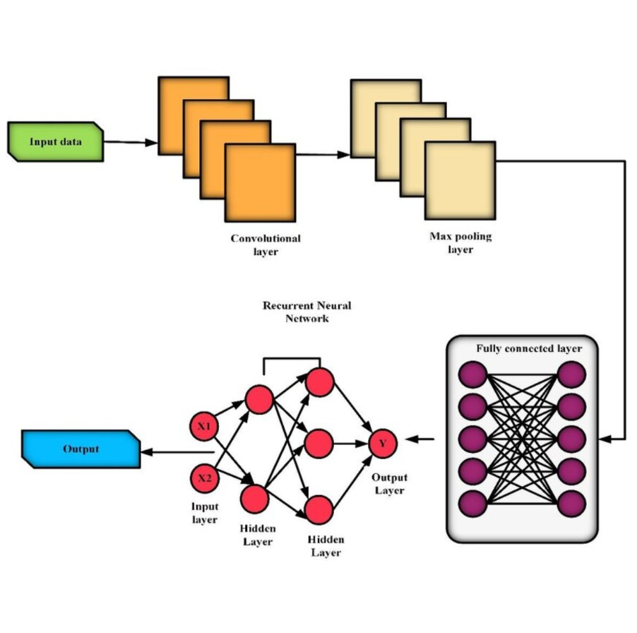
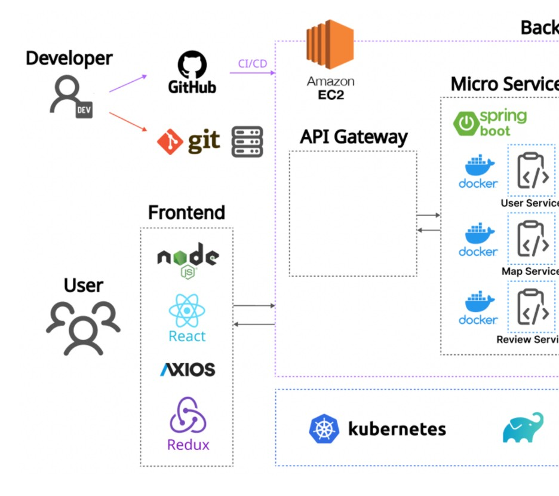
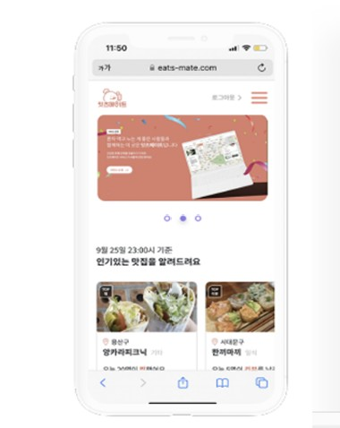
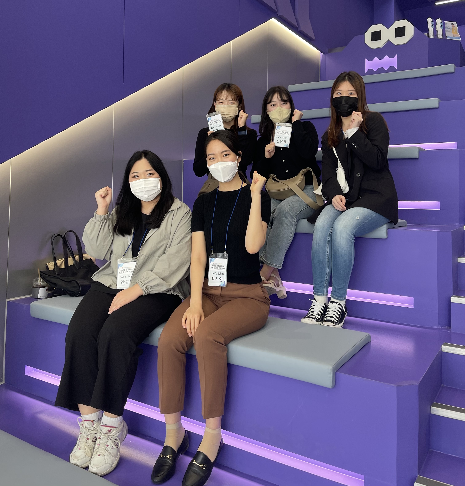
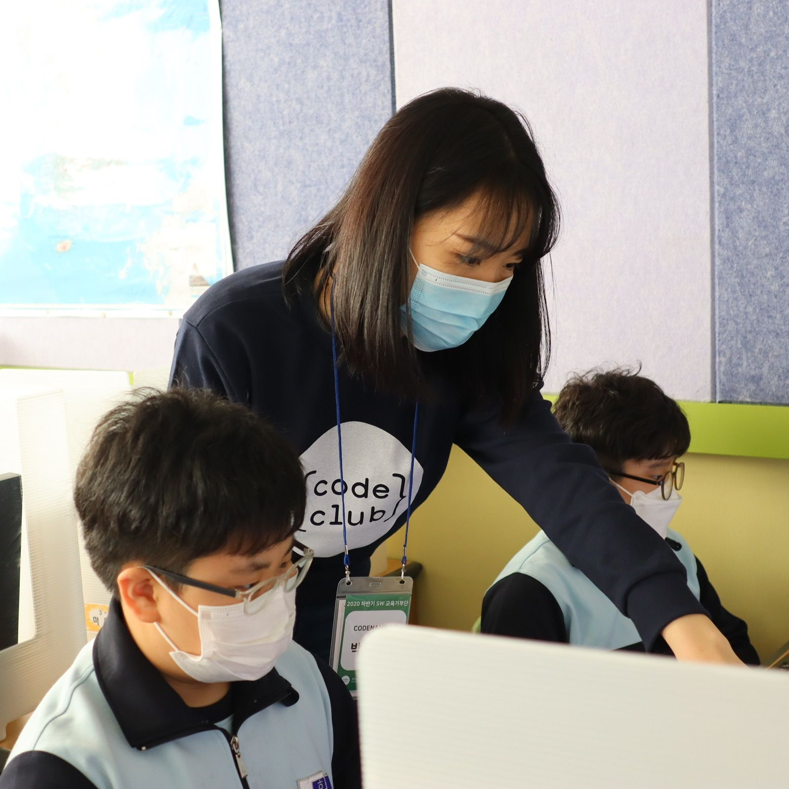
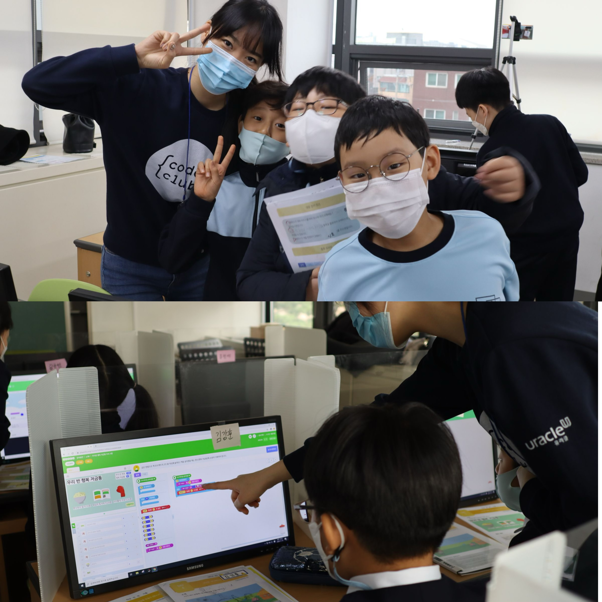
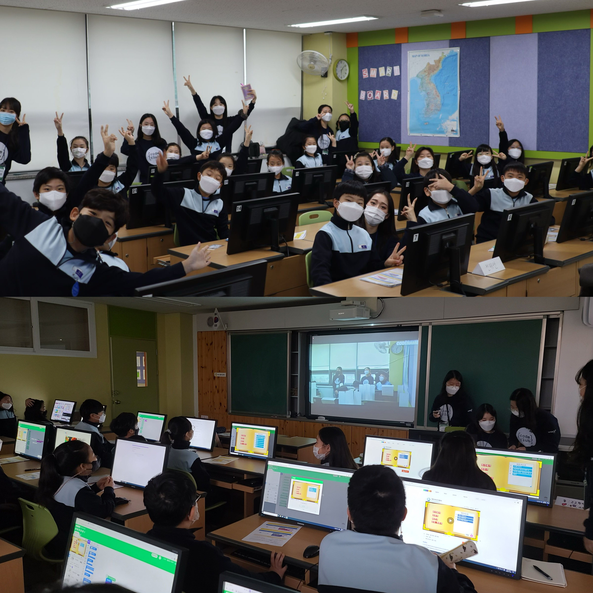

I'm a solutions architect at Megazone in Seoul, Korea, where I design large-scale Akamai CDN and security architectures for enterprise clients.
With a B.E. in Information Security (CyberSecurity) and a strong foundation in software engineering, I focus on bridging performance and protection at the edge.
My current interest lies in developing secure, intelligent edge networks that can adapt in real time.
Engineered Akamai-based web networks for enterprise clients with a Zero-Trust architecture
Designed a custom Akamai WAF blocking 200M+ malicious requests monthly, recovering ~10% revenue leakage and maintaining ≥99.9% uptime.
Built Splunk dashboards for real-time KPI tracking; automated detection aligned with MITRE ATT&CK and OWASP.
Software Engineer Intern | 4DREPLAY — San Francisco, CAJul 2023 – Dec 2023
Improved data delivery performance by 90% via optimized AWS CloudFront CDN configuration.
Eliminated 40% data redundancy by consolidating into a centralized AWS RDS database.
Built an automated pipeline using the Jira REST API and AWS Lambda to sync Jira data with the central DB.
Software Engineer Intern | Tart — Seoul, KoreaSep 2021 – Feb 2022
Developed a real-time investment dashboard with React, TypeScript, and Next.js, reducing initial load by 20% and improving interaction speed.
Accelerated deployments by 40% using automated workflows with Docker and Ansible.
Created high-performance Python APIs to efficiently process 200+ downstream requests.
Project

Improved Malware Packet Classification in Encrypted TLS Traffic based on Hybrid Sampling Team Leader & Researcher
Mar 2023 – Jul 2023
Awarded 2nd place at the Korea Simulation Academic Conference of the Korea Society for Simulation.
Initiated research on malware detection within TLS-encrypted traffic without decryption, achieving more efficient classification than conventional methods.
Utilized ResNet-based CNN and FS-Net-based RNN models with Markov chain fingerprinting to capture sequential TLS message patterns, improving feature extraction and reducing false positives.



Single Traveler Application “Eats-Mate” Team Leader & Full-Stack Developer
Jun 2022 – Oct 2022 Frontend code /
Backend code
Won 3rd place out of 156 teams at the Tourism Startup Contest organized by the Korea Tourism Public Institution & KAKAO.
Led development and team coordination, overseeing the project from concept to IR presentation.
Directed full-stack development: built a React/Next.js frontend and Spring Boot microservice backend deployed on AWS (EC2, RDS, S3).
Unversity Festival Application "Unifesta" Full-Stack Developer
Nov 2021 – Feb 2022
Developed a unified event management platform enabling users to discover and join university events in real time.
Built dynamic user interfaces using React and integrated RESTful APIs developed with Node.js and Express.
Deployed the full-stack application on AWS EC2 with Nginx reverse proxy for scalability and fault tolerance.
Others
APEC in Sanfrancisco Korean Intern Representative & Speaker
Nov 2023
Represented Korean interns at the Korean Official Summit during APEC and shared my story as one of only ten government-sponsored students selected nationwide.
Arduino coding volunteering Team Leader & Instructor
Jan 2021 – Jun 2021
As team leader, planned and organized the entire curriculum, leading the team and coordinating with students to ensure a collaborative and productive learning environment.



Python coding volunteering Club Founder & Instructor
Sep 2020 – Dev 2020
Founded a coding volunteer organization and taught Python Entry coding to over 200 4-grade elementary school students